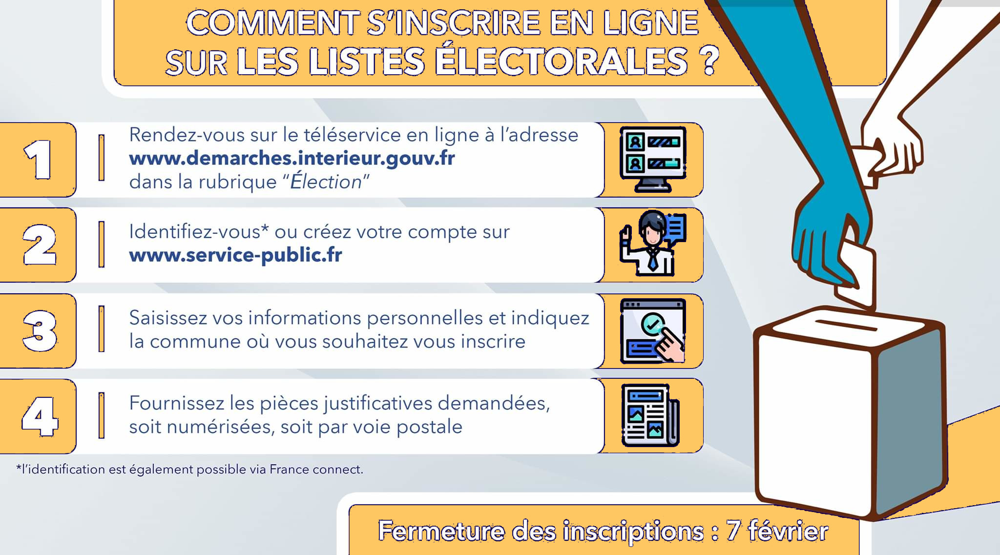

<<< Accueil
Les listes éléctorales
Une institution au centre de l'engagement politique français
1) Définition
Qu'est-ce que c'est ?
Une liste électorale est une liste exhaustive des citoyens d'une commune ou d'une région municipale ayant le droit de voter
Pour se faire enregistrer sur cette liste et donc pouvoir voter,
les citoyens doivent s'inscrire sur la liste de leur commune avant la date des élections
À quoi ça sert ?
Il est obligatoire de s'inscrire sur une liste électorale.
C'est pourquoi il est important de savoir si l'on est bien inscrit sur la liste électorale de sa commune.
Pour cela il est possible de contacter la mairie de ton domicile. Si tu n'est pas inscrit, tu peux tout simplement demander à le devenir. Cette démarche est entièrement gratuite.
Les avantages :
- Permettent de s'assurer que seuls les citoyens ayant le droit de voter puissent le faire
- Réduire les risques de fraude électorale
- Faciliter l'organisation et la planification des élections
- Assurer une répartition équitable des électeurs dans chaque circonscription
- Encourager la participation citoyenne (par l'inscription sur les listes)
2) Comment s'inscrire ?
S'inscrire sur les listes électorales

Les conditions d'inscription
Pour s'inscrire, il suffit:
- d'avoir la nationalité française
- d'avoir plus de 18 ans
- d'avoir ses droits civiques, c'est-à-dire ne jamais avoir
été condamné par un tribunal pour une faute grave